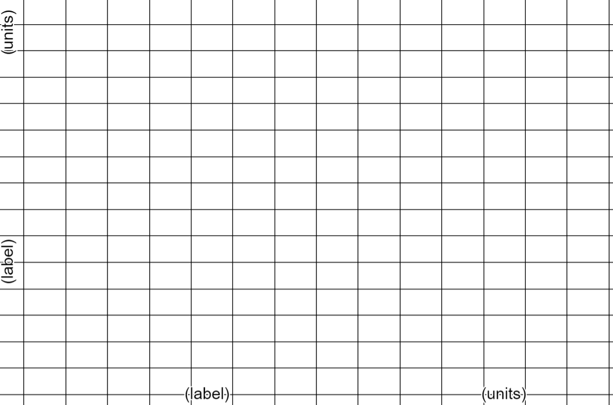
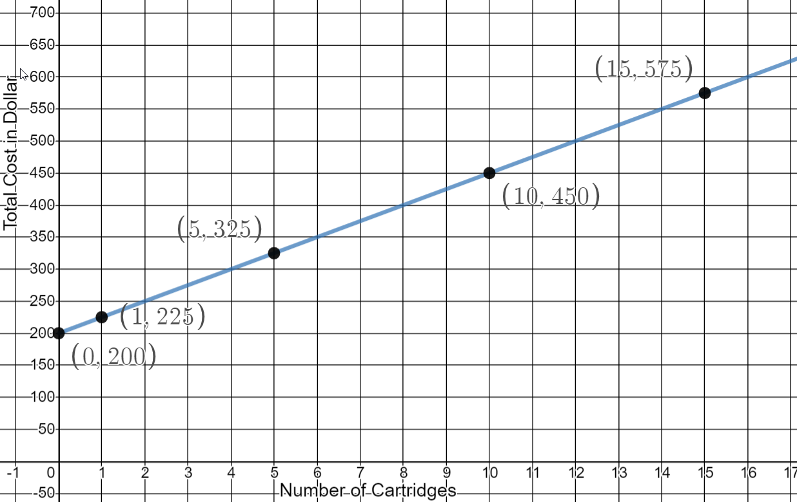
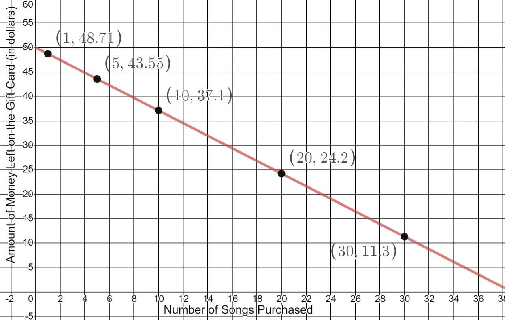
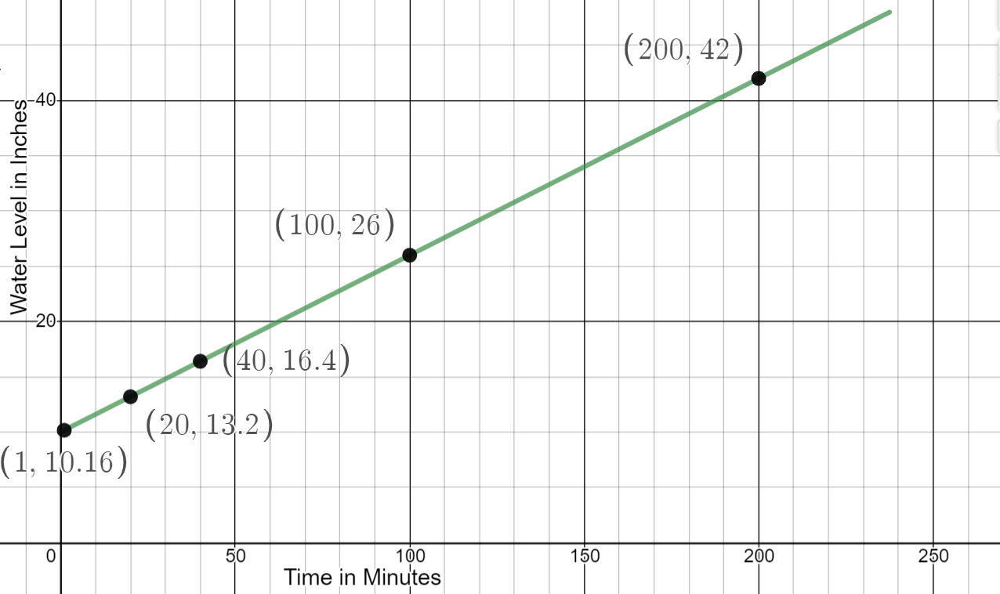
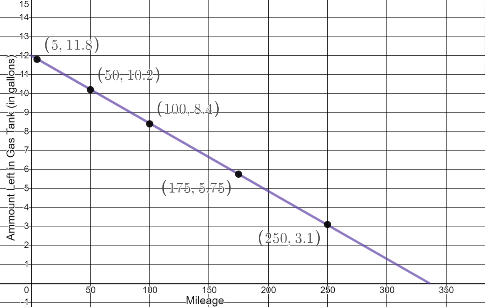

Linear Modeling and Logic Unit
4.4 Linear Modeling
For each scenario:
- Identify the independent and dependent variables
- Describe the domain and range
- Make a table with at least 4 rows of data values
- Create a graph; label and number carefully
- Write an equation for the scenario
- Answer the additional questions about the scenario
Scenario 1
You buy a $200 printer and the ink cartridges cost $25 each. Write an equation for total cost.
y = 25x + 200
Cartridges |
Total Cost |
|---|---|
0 |
$200 |
1 |
$225 |
5 |
$325 |
10 |
$450 |
15 |
$575 |
Domain:
Domain: \(\begin{equation} x \geq 0 \end{equation} \)
Range:
Range: \(\begin{equation} y \geq 200 \end{equation} \)
 If your office budgets $30 per month for printer costs, how many ink cartridges can they buy the year they purchased the printer?
25x + 200 = 360
25x = 16
x = 6.4
The office can buy 6 cartridges for the year.
Scenario 2
You get a $50 iTunes gift card for your birthday. Each song costs $1.29. Write an equation for how much is left on your gift card.
y = 50 - 1.29x
Number of Songs |
Amount Left on Card |
|---|---|
1 |
$48.71 |
5 |
$43.55 |
10 |
$37.10 |
20 |
$24.20 |
30 |
$11.30 |
Domain:
Domain: \(\begin{equation} 0 \leq x \leq 38 \end{equation} \)
Range:
Range: \(\begin{equation} 0 \leq y \leq 50 \end{equation} \)
What is the y-intercept of your graph?
(0,50)
How many single track songs can you buy with your gift card?
50 - 1.29x = 0
-1.29x = -50
x = 38.76
You can buy 38 songs with a $50 gift card.
Scenario 3
It’s summer and Jill is filling her above ground pool. It takes 25 minutes to raise the water level 4 inches. The water level is already 10 inches. Write an equation for the depth of the pool depending on time.
\( \begin{equation}y = 10 + 0.16x \text{ or } y = 10 + \frac{4}{25} x \end{equation} \)
Time |
Depth of Pool |
|---|---|
1 |
10.16 |
20 |
13.2 |
40 |
16.4 |
100 |
26 |
200 |
42 |
Domain:
Domain: \(\begin{equation} 0 \leq x \leq 237.5 \end{equation} \)
Range:
Range: \(\begin{equation} 10 \leq y \leq 48 \end{equation} \)
If the pool is 4 feet deep, how much longer will it take Jill to fill the pool?
48 = 10 + 0.16x
38 = 0.16x
x = 237.5
It will take 237.5 minutes to fill the pool.
What is the rate Jill is filling the pool in inches per minute?
\( \begin{equation} \frac{4 \text{ inches}}{25 \text{ minutes}} = 0.16 \text{ inches per minute} \end{equation} \)
Scenario 4
The gas tank in your car holds 12 gallons. The dashboard statistics tells you that you get 28 miles per gallon. Write an equation for the amount of gasoline left in your tank depending on how many miles you’ve driven.
\( \begin{equation} y = 12 - \frac{1}{28} x \end{equation} \)
Mileage |
Amount of Gas in Tank |
|---|---|
5 |
11.8 |
50 |
10.2 |
100 |
8.4 |
175 |
5.75 |
250 |
3.1 |
Domain:
Domain: \(\begin{equation} 0 \leq x\leq 336 \end{equation} \)
Range:
Range: \(\begin{equation} 0 \leq y \leq 12 \end{equation} \)
Your trip meter says you’ve gone 290 miles so far on this tank of gas. Can you make it to work and back (25 miles each way) without stopping for gas?
It is a 50 mile round trip.
You have 1.6 gallons left in your tank.
28 * 1.6 = 46 miles
You will not make it to work and back without putting more gas in the tank.